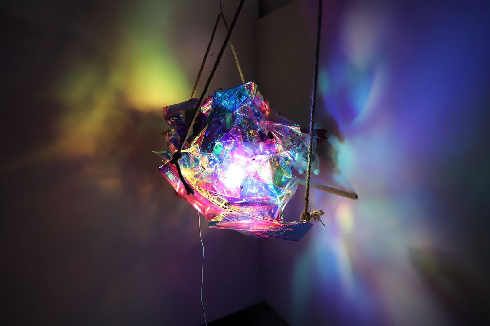

Light Sculpture / Selected Work
The Virus
A wearable light sculpture exploring biological attachment, infection, and the presence of color within darkness.

About the Project
The Virus began from visual research into cells, plant textures, and organic forms. From these references, I became interested in the relationship between a virus and the living body it depends on.
I translated this biological relationship into a wearable light sculpture. By carrying the object on my back, my body became the host, while the sculpture became a virus-like form attached to it.
The work uses light, translucent material, dry flowers, and bodily performance to express a state of infection, dependence, and coexistence.
Materials: PVC cloth, wire entanglement, dry flowers, light bulb, rope
Details & Light
The sculpture creates a fragile, colorful presence in darkness. Its light and translucent materials suggest both vulnerability and resilience, turning the body into a site of attachment, transformation, and hidden brightness.
